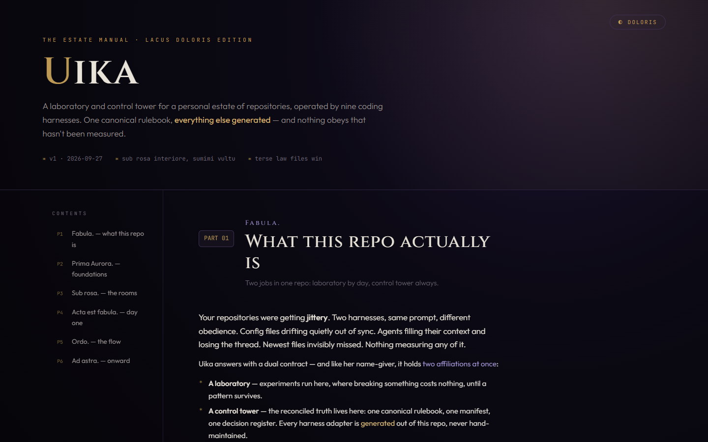

Manual
Instructions and working agreements, written to be read.
Tools
Uika is an early personal lab for coordinating coding tools across my repos. The manual is part of it, since decisions have to live somewhere.
It's private. This is just a piece of it.

What's in it
A manual, a machine-readable contract and a decision register. Code follows what's written down, so each repo doesn't have to remember on its own.
How I like to workInstructions and working agreements, written to be read.
The parts a machine needs, in a structured file.
ADRs first, so a decision can be revisited without guessing why it was made.
Still in development. The screenshot is of the manual, not a finished app.